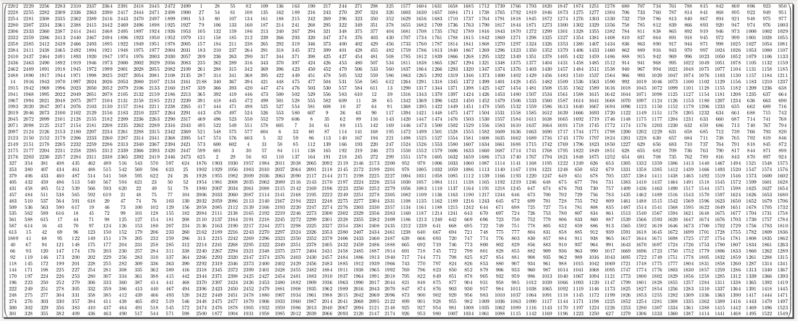
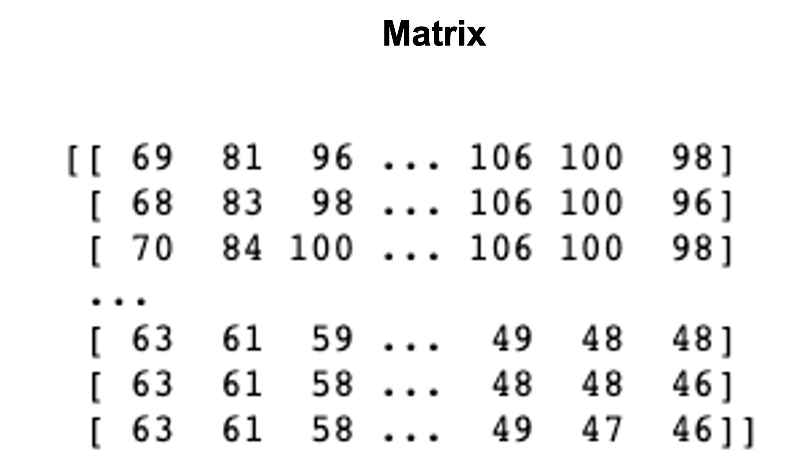
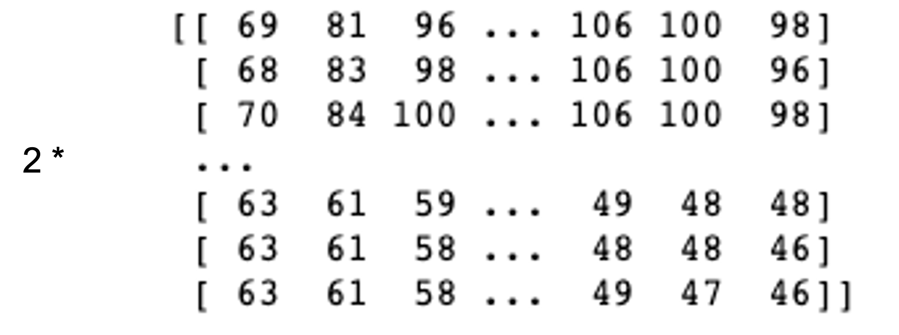
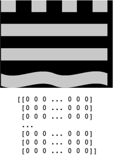
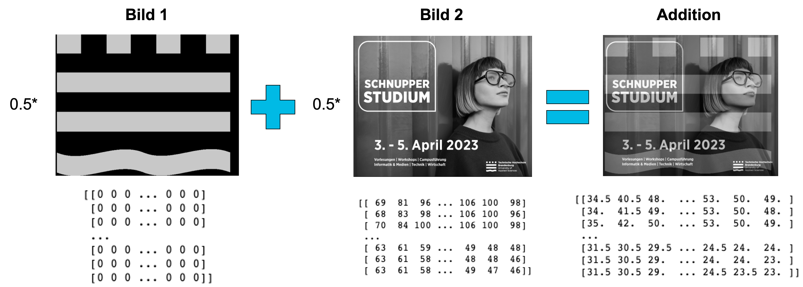

Kapitel 5 - Matrizen#
5.1 Lernziele#
In diesem Abschnitt lernen wir die folgenden Dinge:
Lernziele
Verständnis der Matrixnotation und des Aufbaus von Matrizen
Beherrschung grundlegender Operationen mit Matrizen wie Addition, Subtraktion, Skalare Multiplikation und Transposition.
Verständnis der Matrixmultiplikation, einschließlich der Bedingungen für die Durchführung und der Eigenschaften der Matrixmultiplikation.
5.2 Was ist eine Matrix - z.B. ein Graustufenbild!.#
Eine Matrix ist nichts kompliziertes. Im Wesentlichen handelt es sich um eine tabelleraische Anordnung von Zahlen mit Spalten und Zeilen um die wir runde Klammern machen. Das kann so aussehen:
Oder aber wenn wir es mit vielen Daten zu tun haben auch mal so: 
Matrizen spielen eine Wichtige Rolle immer wenn es um Daten geht. So lassen sich Datentabellen als Matrizen interpretieren, wenn die Werte rein aus Zahlen bestehen. Matrizen spielen ebenso in der Bildverarbeitung eine Wichtige Rolle. Am einfachsten wird diese Verbindung bei Graustufenbildern.
Die Pixel des Bildes ergeben die tabellarische Anordnung. Der Wert wird durch die Intensität des einzelnen Pixels gegeben.
So ergibt beispielsweise folgendes Bild:
Folgende Matrix:

Skalare Multiplikation
Wir können nun das Bild bearbeiten in dem Wir die Matrix verändern. Beispielsweise können wir jeden Wert mit 2 Multiplizieren:

Was bedeutet diese Operation auf der Ebene des Bildes?
Es ist eine Erhöhung des Kontrasts:
Matrix Addition Sei nun ein weiteres Bild gegeben:

Wir nehmen nun weiter an, dass beide Bilder und damit auch die zugehörigen Matrizen die gleiche Größe besitzen. Wir wollen nun beide Bilder übereinanderlegen. Dies können wir durch Addition der beiden entsprechenden Matrizen schaffen. D.h. in jeder Komponente addieren wir einfach die beiden Zahlen miteinander, so dass eine neue Matrix der gleichen Größe entsteht. 
5.3 Matrixnotation#
In diesem Kapitel wollen wir uns mit der Matrixschreibweise bekannt machen und einige Formale Notationen einführen.
Matrizen#
Wir verwenden als Namen für Matrizen häufig Großbuchstaben. Zum Beispiel
Die Matrix \(B\) hat in diesem Fall 2 Zeilen und 3 Spalten. Wir nennen sie auch eine \(2\times 3\) Matrix.
Wir schreiben eine Allgemeine \(m\times n\) Matrix wie folgt hin:
Wir nennen \(m\times n\) auch die Dimension der Matrix A.
Obige Struktur bedeutet, dass wenn wir für eine Matrix \(A\) den Wert \(a_{ij}\) schreiben, dass wir den Wert in der \(i\)-ten Zeile und der \(j\)-ten Spalte meinen.
Frage
Im obigen Beispiel was ist \(b_{12}\)?
Antwort:
\(b_{12}=3\)
Im nächsten Schritt müssen wir definieren, welchen Wertebereich die einzelnen Zahlen in der Matrix haben sollen. In der Regel wollen wir, dass die Zahlen in \(\mathbb{R}\) sind.
Wir schreiben dann für die Menge aller Möglichen \(m\times n\) Matrizen mit reellen Zahlen
Vektoren#
Eine \(n\times 1\) Matrix nennen wir Spaltenvektor oder Vektor. Zum Beispiel \(v=\begin{pmatrix} 1\\2\\3\\4 \end{pmatrix}\). Wir schreiben statt \(\mathbb{R}^{n\times 1}\) einfach nur \(\mathbb{R}^n\).
Eine \(1\times n\) Matrix nennen wir Zeilenvektor. Zum Beispiel \(v=\begin{pmatrix} 1 & 2 & 3 & 4 \end{pmatrix}\).
Spalten- und Zeilenvektoren bezeichnen wir in der Regel mit einem kleinen lateinischen Buchstaben (z.B. \(v,w,u\)).
Skalar#
Fall wir im Kontext der Matrizen und Vektorrechnung betonen wollen, dass es sich bei einem Objekt um ein einzige Zahl (z.B. in \(\mathbb{R}\)) handelt, so nennen wir das Objekt ein Skalar. Wir schreiben, dann häufig einen kleinen griechischen Buchstaben um das zu kennzeichnen (z.B. \(\lambda \in \mathbb{R}\)).
Besondere Matrizen#
Wir wollen noch zwei besondere Matrizen einführen, die es verdienen eine abkürzende Schreibweise zu bekommen.
Zunächst die sogenannte, Nullmatrix. \(\mathbf{0}_{mn} \in \mathbb{R}^{m\times n} \). Dies bezeichnet eine \(m\times n\) Matrix, welche nur aus Nullen besteht. Ist im Kontext klar, welche Dimension \(m\times n\) gemeint ist, so schreiben wir abkürzend auch nur \(\mathbf{0}\).
Zum Anderen die sogenannte Einheitsmatrix.
Dies ist eine spezielle Art von Matrix, bei der die Diagonalelemente 1 sind und alle anderen Elemente 0.
5.4 Skalare Multiplikation und Matrixaddition#
Die skalare Multiplikation und die Matrixaddition sind fundamentale Rechenoperationen für Matrizen. Wir starten zunächst mit der Matrixaddition.
Matrixaddition#
Definition 44
Gegeben seien zwei Matrizen \(A,B\in \mathbb{R}^{m\times n}\) mit derselben Dimension \(m \times n\). Die Addition von \(A\) und \(B\), dargestellt als \(A + B\), ergibt eine neue Matrix \(C\) der gleichen Dimension \(m \times n\), wobei jedes Element \(c_{ij}\) in \(C\) definiert ist als:
Machen wir dazu ein einfaches Beispiel.
Example 46
Skalare Multiplikation#
Definition 45
Sei \( A\in \mathbb{R}^{m\times n}\) eine \(m \times n\) Matrix ist und \(\lambda\in \mathbb{R} \) ein Skalar. Dann ist die skalare Multiplikation \(C=\lambda\cdot A\) eine \(m \times n\) Matrix, bei der
Machen wir dazu ein einfaches Beispiel.
Example 47
Sei \(A\) eine \(2 \times 3\) Matrix und \(\lambda = 3\) ein Skalar. Die skalare Multiplikation von \(A\) mit \(\lambda\) ergibt:
Rechengesetze der Addition und skalaren Multiplikation#
Seien \(A,B,C\in \mathbb{R}^{m\times n}\), sowie \(\lambda,\mu\in \mathbb{R}\).
Dann gelten folgende Rechenregeln:
Matrixaddition:
Kommutativgesetz: \(A + B = B + A\)
Assoziativgesetz: \((A + B) + C = A + (B + C)\)
Nullmatrix: \(A + \textbf{0} = A\)
Negation: \(A + (-A) = \mathbf{0}\)
Skalare Multiplikation:
Assoziativgesetz: \((\lambda \mu)A = \lambda(\mu A)\)
Distributivgesetz (Skalar): \((\lambda + \mu)A = \lambda A + \mu A\)
Distributivgesetz (Matrix): \(\lambda (A + B) = \lambda A + \lambda B\)
Einheitselement: \(1\cdot A = A\)
Skalare Multiplikation mit Null: \(0\cdot A = \mathbf{0}\)
5.5 Transposition von Matrizen#
Das Transponieren von Matrizen bedeutet die Spalten und Zeilen zu vertauschen. Das heißt aus einer \(m\times n\) Matrix wird eine \(n\times m\) Matrix, die wir mit \(A^T\) bezeichnen. Genauer definieren wir:
Definition 46
Sei \(A\in \mathbb{R}^{m\times n}\). Dann ist \(C=A^T\) die \(n\times m\) Matrix mit
Example 48
Sei
Die Transposition von \(A\), erhalten wir, indem wir die Zeilen von \(A\) zu den Spalten von \(A^T\) und die Spalten von \(A\) zu den Zeilen von \(A^T\) werden:
Frage: Was ist die doppelte Transposition einer Matrix: \((A^T)^T\)?
Antwort:
\((A^T)^T=A\)
5.6 Matrixmultiplikation#
Wir haben bisher die Addition und die skalare Multiplikation von Matrizen kennengelernt. Dabei waren die Definitionen sehr natürlich. Das was wir mit Zahlen normalerweise machen, übertragen wir auf Matrizen, in dem wir es komponentenweise durchführen.
Die Multiplikation von zwei Matrizen funktioniert aber auf eine andere Art und Weise.
Wir bauen die Multiplikation schrittweise auf.
Vektor mal Vektor#
Die einfachste Möglichkeit einer Matrixmultiplikation ist die Multiplikation eines Zeilenvektors mit einem Spaltenvektor. Dies entspricht dem aus der Analytischen Geometrie bekannten Skalarprodukt.
Sei dazu \(v=\begin{pmatrix} a_1 & a_2 & \dots & a_n \end{pmatrix}\in \mathbb{R}^{1\times n}\) und \(w=\begin{pmatrix} b_1 \\ b_2 \\ \vdots \\ b_n \end{pmatrix}\in \mathbb{R}^{n\times 1}\).
Dann definieren wir
Example 49
Sei
Das Skalarprodukt wird berechnet, indem die entsprechenden Elemente der beiden Vektoren multipliziert und summiert werden:
Matrix mal Vektor#
Die Situation “Matrix mal Vektor” hatten wir schon im Kapitel Lineare Gleichungen.
Wir sehen anhand der obigen Gleichung, dass die Situation Matrix mal Vektor sich so verhält, dass ein neuer Vektor entsteht. Die einzelnen Komponenten sind nun die Skalarprodukte der Zeilen der Matrix mit dem Vektor, welcher multipliziert wird.
Formal ausgedrückt heißt das:
Sei \(A\in \mathbb{R}^{m\times n}\) und \(v\in \mathbb{R}^{n\times 1}\).
Dann ist \(w=A\cdot v \in \mathbb{R}^{m\times 1}\) und es gilt:
wobei \(a_{i*}\in \mathbb{R}^{1\times n}\) die \(i\)-te Zeile von \(A\) ist.
Auch hierzu gucken wir uns ein kurzes Beispiel an
Example 50
Angenommen, wir haben die Matrix \(A\) und den Vektor \(v\) gegeben:
Um die Multiplikation von \(A\) und \(v\) durchzuführen, multiplizieren wir jede Zeile von \(A\) mit dem entsprechenden Element von \(v\) und summieren die Produkte. Das Ergebnis ist ein neuer Vektor \(w\):
Das Ergebnis der Multiplikation von \(A\) und \(v\) ist der Vektor \(w = \begin{pmatrix} 20 \\ 47 \end{pmatrix}\). Beachte, dass die Anzahl der Spalten in \(A\) der Anzahl der Zeilen in \(v\) entsprechen muss, um die Multiplikation durchführen zu können.
Matrix mal Matrix#
Als letztes betrachten wir nun das Produkt zweier Matrizen \(A\) und \(B\).
Die erste frage, die sich stellt ist: Welche Dimensionen dürfen \(A\) und \(B\) haben, damit wir sie miteinander multiplizieren können.
Die obige Formel beschreibt, dies. Demnach muss die Anzahl der Spalten der ersten Matrix (die Anzahl der Zwischenprodukte) mit der Anzahl der Zeilen der zweiten Matrix (ebenfalls die Anzahl der Zwischenprodukte) übereinstimmt.
Aber wie berechnet man das Produkt von zwei Matrizen:
Definition 47
Sei \(A\in \mathbb{R}^{m\times n}\) und \(B\in \mathbb{R}^{n\times k}\). Dann ist das Produkt \(C=AB\) definiert durch
Dabei ist \(a_{i*}\in \mathbb{R}^{1\times n}\) die \(i\)-te Zeile von \(A\) und \(b_{*j}\in\mathbb{R}^{n\times 1}\) die \(j\)-te Spalte von \(B\).
Das heißt das Produkt \(A\cdot B\) ist die Matrix \(C\), dere \(i,j\)-te Komponente \(c_{ij}\) das Skalarprodukt aus dem \(i\)-ten Zeilenvektor von \(A\) und dem \(j\)-ten Spaltenvektor von \(B\) ist.
Hier noch ein einfaches Beispiel
Example 51
Angenommen, wir haben die Matrix \(A\) der Dimension \(2\times 3\) und die Matrix \(B\) der Dimension \(3\times 2\):
Um das Produkt \(AB\) zu berechnen, multiplizieren wir jede Zeile von \(A\) mit jeder Spalte von \(B\) und summieren die entsprechenden Produkte. Das Ergebnis ist eine neue Matrix \(C\) der Dimension \(2\times 2\):
Es gibt auch viele gute externe Quellen, die einem gut erklären wie man zwei Matrizen miteinander multiplizieren kann.
Z.B.
5.7 Gesetze der Matrixmultiplikation#
Es seien \(A,B,C\) Matrizen deren Produkt so definiert ist, dass untere Produkte existieren. Sei weiter \(\lambda\in \mathbb{R}\). Dann gelten die folgenden Gesetze der Matrixmultiplikation:
\((A \cdot B) \cdot C = A \cdot (B \cdot C) = A \cdot B \cdot C \)
\((\lambda A) \cdot B = A \cdot (\lambda B) = \lambda (A \cdot B)\)
\(A \cdot E = E \cdot A = A\)
\(A \cdot \textbf{0} = \textbf{0} \cdot A = \textbf{0}\)
\(A \cdot(B + C) = A \cdot B + A \cdot C\)
\((A+B) \cdot C = A \cdot C + B \cdot C\)
\((A \cdot B)^T = B^T \cdot A^T\)
ACHTUNG
Es gilt nicht
D.h. es gibt kein Kommutativgesetz für Matrizen.